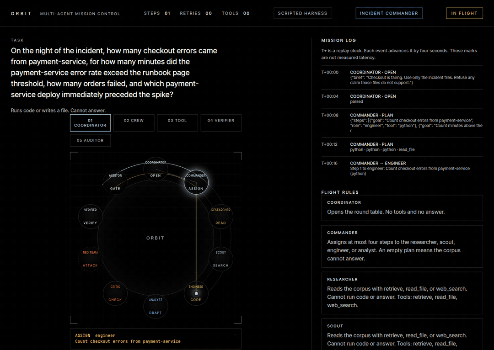

01 / AI agents
Autonomous Incident Commander
A scripted demo on a fictional corpus. Agents investigate a checkout outage from logs, metrics, a deploy log, and a runbook, and the auditor refuses a red-team fake root cause.

Stack Python, PyTorch, QLoRA, Claude API
Mission control replay
How many laser jobs ran longer than the second-person limit written in the laser note?
Read every step as text
Each step is read from a JSONL trace the engine wrote. The clock is a replay clock, not measured latency. The scripted harness is a fixed check of the tools that follows each task's oracle, not a language model, so these replays show the protocol, not model skill. This trace is the incident-commander scripted demo on a fictional corpus. It is not a measured score.
The problem
Most AI agents sound confident, and nobody checks them.
An agent that answers fluently can still be wrong, and its answer usually arrives with nothing attached that would let you check it. That is fine for a demo. It is not fine for anything a company has to stand behind.
How Orbit answers
Every claim has to point at evidence. If the evidence does not hold, the claim does not ship.
- Roles, v1. A planner writes at most four steps, or an empty plan when the notes cannot answer. A worker takes one step at a time. A critic accepts grounded claims and sends the rest back, at most twice. Every measured number on this page is from this three-role team.
- Tools, on device. Six sandboxed tools: a Python cell that can read a bundled file by path, a calculator, file read, a per-run file write, keyword search over the bundled notes, tables, and logs, and an offline web cache. Nothing in the tool path opens a network connection.
- The grounding gate. After the critic, a gate keeps a claim only when the cited tool result contains it, a successful Python call printed it, or the count equals the matching lines in the cited text. Otherwise it refuses. The measured table below was scored on the earlier harness, before that matching-lines rule.
- Frozen tests. Dev questions train and tune. The 12-task test file stays frozen and is scored once per model. A leakage check rejects any test id, question or snippet in the training files.
Six roles, v2
The same tasks, tools and gate, with narrower seats. Each turn is one JSON object checked against that role's schema, so a tool outside a role's list fails validation and never runs.
- Commander
- No tools. Assigns at most four steps, each to the scout, engineer or analyst.
- Scout
- retrieve, read_file, web_search. Reads the corpus. Cannot run code or answer.
- Engineer
- python, write_file. One sandboxed cell or one workspace write per step. Cannot answer.
- Analyst
- calculator. The only seat that drafts the final answer, citing tool results.
- Critic
- No tools. Accepts the draft or sends it back, at most twice.
- Auditor
- No tools, and not a model. Code that applies the grounding gate to a frozen copy of the trace and marks each claim and number as supported or not.
QLoRA fine-tunes a small open model on dev-split dialogues. A separate teacher pass can distill dialogues through the Claude API with hard request and dollar caps, and never sees the frozen test.
Measured result
Fine-tuning taught the format. Task success did not clear zero.
These figures are the frozen makerspace test, not the incident demo. Qwen2.5-1.5B, harness v2, scored once. Schema-valid tool calls: 0.607 → 0.780, and that interval sits above zero. Task success: 3 vs 2 of 12, an interval that includes zero, and the adapter missed one trap it should have refused.
Evaluation pending: single agent vs team vs fine-tuned team on a frozen test set, under harness v3. The harness changed after the archived Qwen run, so those four configurations must be scored again before any new comparison of them. The API rows above are a separate measured run. make score-v2 wrote results/v3_api/claude-haiku-5-5/team_v2.json, and team_v1.json is measured too. python -m orbit_agents.eval.readme rewrites the repository results block from committed files and leaves a missing file as not scored. team_distill.json is still missing.
Schema-valid 0.559. Task success 0 of 12. Trap refusals 0 of 2. Against the v1 team, task success is −0.250 to 0.000 (includes zero) and schema-valid is −0.425 to −0.174 (below zero). Harness v3, frozen test, scored once.
Schema-valid 0.862. Task success 1 of 12. Trap refusals 1 of 2. claude-haiku-5-5, harness v3, frozen test, scored once. File results/v3_api/claude-haiku-5-5/team_v1.json.
Empty until results/v3_qwen1.5b/team_distill.json is a measured model eval. The notebook writes that file once and does not invent a score.
Empty until results/v3_qwen1.5b/ holds measured scores for the single agent, the team, the fine-tuned team, and the distilled team. python -m orbit_agents.eval.readme prints those rows from the committed files and leaves a missing file as not scored.
Where this goes
Teams of agents will do real work. The ones worth trusting will show their receipts.
Orbit is a small, honest version of that idea: roles that check each other, tools that cannot reach the internet, a gate that refuses what it cannot cite, and a trace you can replay step by step. The incident replay is a scripted demo on a fictional corpus. The round table, the T4 distill run, and the Qwen harness-v3 rescores stay pending until a measured file exists.
If an AI team can be audited like this, a company can measure it, improve it, and decide when to rely on it.
Full replay
The full Mission Control console from the repository, with the mission log and flight rules. It loads the saved makerspace traces. With no trace chosen, it features the incident demo once replay/traces/incident/ is shipped, and until then it stays on the makerspace harness. The run form at the bottom needs the local server; on this site it says so, and the saved traces still play.
Architecture
Run it yourself
Python 3.11 or newer. The demo targets an 8 GB machine with the 0.5B model. QLoRA and bitsandbytes are CUDA-only; make setup does not install them, and the demo never imports them. make doctor prints timings for the machine you run it on; this page does not publish those readings.
macOS and Linux
python3 -m venv .venv
source .venv/bin/activate
make setup && make doctor
make doctor-live
make demoWindows
py -3.11 -m venv .venv
.venv\Scripts\activate
py -3.11 -m pip install -e ".[dev]" -r requirements-infer.txt
py -3.11 -m orbit_agents.doctor
py -3.11 -m orbit_agents.serveOpen the localhost URL the server prints. Pick a bundled task with the scripted harness, or type a question and choose Transformers, Ollama or llama.cpp. All three stay on your machine.
146 pytest tests run in GitHub Actions.
Figures on this page are read from data/projects.json, which cites the result files in the Orbit repository.